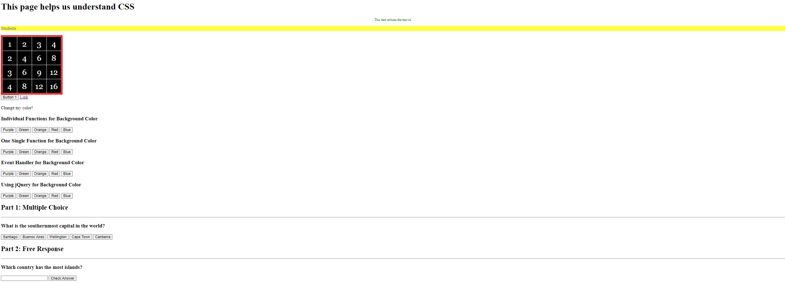

My Favorite Hobby
Before CS50
My favorite hobby is coding. I have been coding for about two and a half years. In my freshman year, I was introduced to coding by a friend. He would often explain the things he was coding, which I found very interesting. He motivated me to start coding in the first place. I first learned Python. I figured that Python was a relativly 'easy' language to learn compared to the others, so it was a good first language. I first learned python from this YouTube video:
I also learned a little bit of Python in my AP Computer Science Principles Course. Here are a couple projects in Python that I made.
- Warrior RPG Game: the user roleplays as a warrior who can buy weapons and defeat opponents in battle. If they win battles, they get to earn gold, which they use for future battles. Each player starts out with their own rating, which determines their success in battle. Wins increase your rating.
- Blackjack: The user plays against the computer. Every round, the computer randomly selects a target number to reach and keeps hitting until that target number is reached. If the computer wins, it saves the target number. Else, it discards the target number. This allows the computer to adapt how much it should hit based on its wins and losses.
- Bee Game: similar to the game called snake, but the bee doesn't grow in length once it retrieves an apple.
This video really helped a lot, allowing me to contribute to the project. This was the first website I ever made in html. Here is the website we worked on for AP CompSci.
CS50
Once school ended, I decided to start Harvard CS50: Intro to Computer Science. I learned about from the same friend who introduced me to Python. I thought it would be a great thing to enhance my computer science skills and expertise as well as put on my resume. I learned a lot about the concepts of computer science, such as how to think algorithmically and solve problems. I also learned several langauges including C, SQL, CSS, and Javascript as well as other ideas such as memory, algorithms, and the Internet. I think this course has grately benefited my experience with programming since it introduced me to the fundamental concepts as well as several languages so I can implement those concepts.
However, I felt like I needed more help with CSS and Javascript. Thus, I watch the shorts in CS50 and make this website:
I also decided to watch this video for Javascript:
This journey brings us now to the present, where I'm creating this website as part of a problem set that utilizes HTML/CSS/Javascript. I hope that in the future, I can expand my expertise in computer science and become a more experienced programmer.
Other Hobbies
Here are some other hobbies that I enjoy doing.
- Music: I play two musical instruments: the violin and viola. I have been playing the violin for about a decade and the viola for about a year. I have been in the string orchestra at my school since 7th grade. Although I don't plan on making music my profession, I hope that I can continue playing my instruments casually in the future.
- Poker: I play poker with my friends about once a month. As of August 1, 2024, I have made a very small profit from all of my poker games (a win's a win). I once made $15 once.
- Hanging out with friends: I try to hang out with my friends as much as possible, whether that would be playing poker, playing board games, playing soccer, going out for meals, having pool parties, and going bowling. I always have a great time with my friends.
- Gym: Ever since summer started I have been going to the gym to build muscle. Right now I follow a three day split (chest/back on monday, arms/shoulders on wednesday, and legs on friday). I'm going so that I can gain more muscle and weight as well as improve my physical health.
- Travel: I like to travel to new places and experience unqiue cultures (more accurately, acutally be at the place; I don't like plane rides). It's so interesting to see how diverse the world is and you are a small piece of that. We went to Japan and Korea over the summer but I also have travelled throughout the United States, Italy, and Greece.